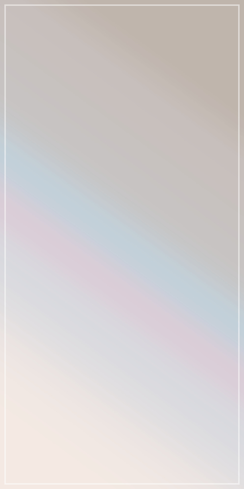
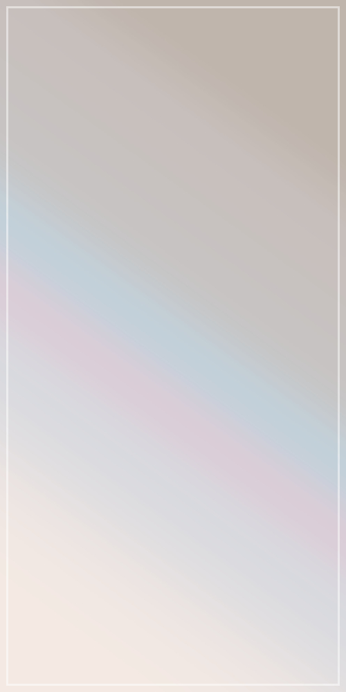

ギャラリー向けテーマ、テキストメインのページです。
サイト説明や小説用ページなどに。画像メインはこっち。
- 更新履歴１
- 更新履歴２
- 更新履歴３
見出し２
見出し３
見出し４
見出し５
見出し６
リンク リンク リンクmarkで下線を引きます。
- リスト１
- リスト２
グリッド表示１。
div class="grid"で、グリッド表示（最大三列）になります。
グリッド表示２。
テキストテキストテキストテキストテキストテキストテキストテキストテキストテキストテキスト
グリッド表示３。
テキストテキストテキストテキストテキストテキストテキストテキストテキストテキスト
グリッド表示４。
テキストテキストテキストテキストテキストテキストテキストテキストテキストテキスト
imgにclass="trim"を付けると、横幅いっぱい・縦最大300pxでトリミングします。縦横比に差がある画像向け。それ以外の大きい画像は、最大縦300pxまで縮小表示します。
class="modal-window"を付けると、クリック時にモーダルウィンドウで表示します。

 
